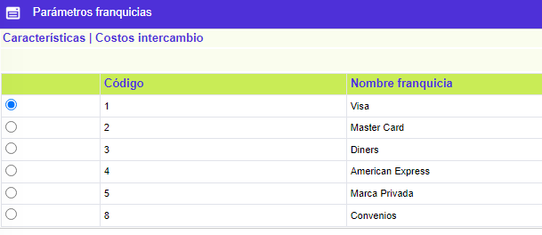
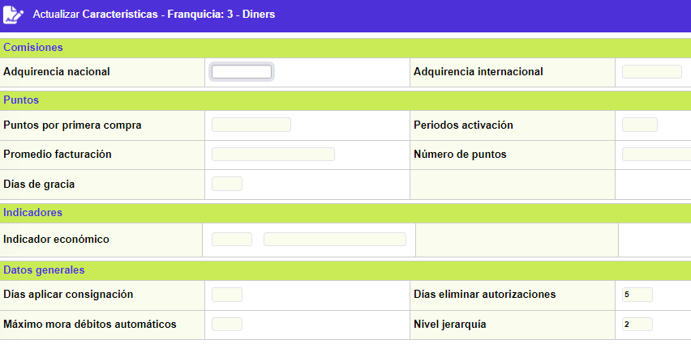
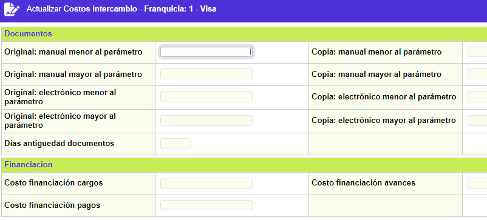

Parámetros franquicias
Esta función habilita la consulta y/o mantenimiento de los conceptos que se tendrán en cuenta en la liquidación del proceso de intercambio determinado para cada marca con las que opera la entidad.
El formulario contiene las opciones Características y Costos Intercambio.

Características: Si el usuario invoca esta opción se despliega un formulario con los siguientes campos:

Comisiones: Parte de las características propias de cada franquicia, que permiten definir los valores de comisión aplicables a las entidades por la recepción de utilizaciones de sus clientes tanto al nivel nacional como internacional.
Adquirencia Nacional |
Campo numérico de 3 posiciones enteras y 2 decimales, no obligatorio, en el cual se define el porcentaje aplicable sobre las comisiones de los comprobantes de venta para determinar los valores devengados por la entidad como consecuencia del envío de movimiento de canje nacional. |
Adquirencia Internacional |
Campo numérico de 3 posiciones enteras y 2 decimales, no obligatorio, en el cual se define el porcentaje aplicable sobre el total de los comprobantes de venta para determinar los valores devengados por la entidad como consecuencia del envío de movimiento de canje internacional. |
Puntos: Conjunto de campos en los que es posible definir los lineamientos generales para la generación de puntos aplicables a las tarjetas que cumplan con las condiciones en un proceso de masificación. (Ver Programas comerciales).
Puntos x primera compra |
Campo numérico de 10 posiciones, no obligatorio, en el cual se definen los puntos que se otorgan al cliente por la primera utilización de compra luego de un proceso de masificación. Por ejemplo, cuando un cliente posee una tarjeta Visa y la entidad realiza una campaña de colocación de tarjetas Mastercard para la creación de paquetes financieros, los puntos generados por la primera compra se asignan a la tarjeta que originó el proceso de masificación (en este caso, la tarjeta Visa). |
Períodos Activación |
Campo numérico de 2 posiciones, no obligatorio, en el cual la entidad registra cuántos períodos (expresados en facturaciones), deben pasar luego de activado el crédito o tarjeta que generó el proceso de masificación, para que el cliente se haga efectivamente acreedor de los puntos generados por la primera compra. |
Promedio facturación |
Campo numérico de 14 posiciones enteras y 2 decimales, no obligatorio, en el cual la entidad define el monto promedio de facturación para otorgar puntos a la tarjeta generada por el proceso de masificación; este promedio es tomado desde la fecha de activación de la tarjeta sobre el número de facturaciones (valor tomado del campo inmediatamente anterior). Solamente si el resultado obtenido es mayor o igual al parámetro aquí definido se asignan los puntos, de lo contrario no. |
Número de puntos |
Campo numérico de 10 posiciones, no obligatorio, el cual corresponde a la definición de la cantidad de puntos que se otorgan a la tarjeta, producto del proceso de masificación por cumplimiento del parámetro Promedio facturación. |
Días de gracia |
Campo numérico de 3 posiciones, no obligatorio, permite definir el número de días que se otorgan a la tarjeta producto del proceso de masificación, para que complete el período de facturación a facturación, puesto que la activación de la tarjeta eventualmente coincide con la fecha de facturación. |
Indicador liquidación costos transacción |
Campo que contiene una lista de valores poblada previamente en la opción indicadores económicos del grupos de Tablas de la entidad financiera del módulo Núcleo, de la cual se selecciona el indicador económico con el cual se calcularán los costos de las transacciones internacionales. |
Indicador económico |
Campo que contiene una lista de valores poblada previamente en la opción indicadores económicos del grupos de Tablas de la entidad financiera del módulo Núcleo, de la cual se selecciona el indicador económico con el cual se calcularán los costos de las transacciones internacionales. |
Datos generales: Contiene información adicional relacionada con algunos plazos fijados por la franquicia.
Días aplicar consignación |
Señala el número máximo de días con que cuenta el establecimiento para efectuar las consignaciones de los “vouchers” recibidos. |
Días eliminar autorizaciones |
Indica el número de días después de los cuales las autorizaciones dadas y sobre las cuales el establecimiento no haya consignado los “vouchers” respectivos, serán eliminadas del sistema liberando el cupo de la tarjeta. |
Máxima mora débitos automáticos |
Contiene el número máximo de periodos de mora (expresado en meses) a partir del cual se suspenderá la inclusión de la tarjeta en la interfase de débitos automáticos, cuando ésta sea la modalidad de pago de dicha tarjeta. |
Nivel jerarquía |
Campo que permite ingresar un valor para definir la prioridad en que los cupos de las tarjetas son asignados según la marca. |
Costos intercambio: Grupo de parámetros que ilustran las condiciones de liquidación costos por solicitud y procesamiento de comprobantes.

Documentos: En este bloque la entidad define los valores cobrados a las demás entidades, por la atención de solicitud de comprobantes de acuerdo con la antigüedad y características.
Original manual menor parámetro |
Campo numéricos de 14 posiciones enteras y 2 decimales, a partir del cual se define el valor que cobra la entidad por la atención de solicitud de comprobantes manuales (captura) originales, siempre y cuando sea menor al número de días de antigüedad del documento (campo Días antigüedad documento). |
Copia manual menor parámetro |
Campo numéricos de 14 posiciones enteras y 2 decimales, a partir del cual se define el valor que cobra la entidad por la atención de solicitud de fotocopia de comprobantes manuales (captura), siempre y cuando sea menor al número de días de antigüedad del documento (campo Días antigüedad documento). |
Original manual mayor parámetro |
Campo numérico de 14 posiciones enteras y 2 decimales, a partir del cual se define el valor que cobra la entidad por la atención de solicitud de comprobantes manuales (captura) originales, siempre y cuando sea mayor al número de días de antigüedad del documento (campo Días antigüedad documento). |
Copia manual mayor parámetro |
Campo numérico de 14 posiciones enteras y 2 decimales, a partir de los cuales se define el valor que cobra la entidad por la atención de solicitud de fotocopia de comprobantes manuales (captura), siempre y cuando sea mayor al número de días de antigüedad del documento (campo Días antigüedad documento). |
Original electrónico menor parámetro |
Campo numérico de 14 posiciones enteras y 2 decimales, a partir del cual se define el valor que cobra la entidad por la atención de solicitud de comprobantes electrónicos originales, siempre y cuando sea menor al número de días de antigüedad del documento (campo Días antigüedad documento). |
Copia electrónico menor parámetro |
Campo numérico de 14 posiciones enteras y 2 decimales, a partir del cual se define el valor que cobra la entidad por la atención de solicitud de fotocopia de comprobantes electrónicos, siempre y cuando sea menor al número de días de antigüedad del documento (campo Días antigüedad documento). |
Original electrónico mayor parámetro |
Campos numéricos de 14 posiciones enteras y 2 decimales, a partir del cual se define el valor que cobra la entidad por la atención de solicitud de comprobantes electrónicos originales, siempre y cuando sea mayor al número de días de antigüedad del documento (campo Días antigüedad documento). |
Copia electrónico mayor parámetro |
Campos numéricos de 14 posiciones enteras y 2 decimales, a partir del cual se define el valor que cobra la entidad por la atención de solicitud de fotocopia de comprobantes electrónicos, siempre y cuando sea mayor al número de días de antigüedad del documento (campo Días antigüedad documento). |
Días antigüedad documento |
Campo numérico de 3 posiciones, opcional, en el cual la entidad define cuán antiguo es el comprobante que la entidad solicita o confirma, para determinar sus costos, valor que se constituye en referencia para determinar si se excede o no dicha antigüedad. |
Financiación: En este bloque se determina los valores que debe pagar la entidad al procesador por la recepción de comprobantes de venta, avances y pagos.
Cargos |
De acuerdo con la clase de documento que se procesa, la entidad parametriza los valores cobrados por la franquicia por los comprobantes de la operación diaria. |
Avances |
De acuerdo con la clase de documento que se procesa, la entidad parametriza los valores cobrados por la franquicia por los comprobantes de la operación diaria. |
Pagos |
De acuerdo con la clase de documento que se procesa, la entidad parametriza los valores cobrados por la franquicia por los comprobantes de la operación diaria. |